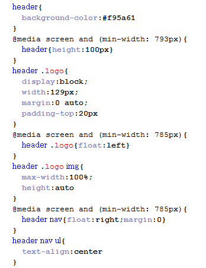
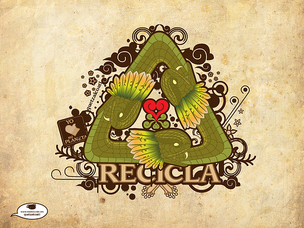

Intro to CSS:
Styling Webpages
Welcome!
Tell us about yourself.
- Who are you?
- What do you hope to get out of the class?
- What’s your favorite HTML tag and why?
Anatomy of a Website
Your Content
+ HTML: Structure
+ CSS: Presentation
= Your Website
A website is a way to present your content to the world, using HTML and CSS to present that content & make it look good.
CSS: What Is It?
CSS = Cascading Style Sheets
CSS is a "style sheet language" that lets you style the elements on your page.
CSS is works in conjunction with HTML, but is not HTML itself.
CSS: What Can It Do?
All colored text, position, and size

CSS: What Does It Look Like?
The CSS Rule

The CSS Rule
selector {
property: value;
}- A block of CSS code is a rule.
- The rule starts with a selector.
- It has sets of properties and values.
- A property-value pair is a declaration.
Connecting CSS to HTML
3 ways
"Inline"
"Embedded"
"External"
Connecting CSS to HTML: Inline
<p style="color:red">Some text.</p>- Uses the HTML attribute style.
- Difficult to use in large projects
- Not preferred.
Connecting CSS to HTML: Embedded
<head>
<style type="text/css">
p {
color: blue;
font-size: 12px;
}
</style>
</head>- Inside <head> element.
- Uses <style> tag.
- Can only be used in one html file
Connecting CSS to HTML: External
<head>
<link rel="stylesheet" type="text/css" href="style.css">
</head>- Shared resource for several pages.
- Reduced file size & bandwidth
- Easy to maintain in larger projects.
- Preferred by nerds everywhere!
Let's Develop It!
- In the same folder you used in the HTML class, create a new file called style.css
- Add a link to the file in the head of your HTML file
- Add the CSS rule below to the CSS file:
body {
background-color: yellow;
}CSS Syntax
Declarations: Property and value of style you plan to use on HTML element.
Declarations end with a semicolon
Declaration groups are surrounded by curly brackets.
selector {
property: value;
property: value;
property: value;
}Selector: Element
p {
property: value;
}Selects all paragraph elements.
img {
property: value;
}Selects all image elements.
CSS Color Values
Your browser can accept colors in many different ways:
- Color name (ex. red)
- Hexadecimal value (ex. #FF0000)
- RGB value (ex. rgb(255, 0, 0))
- HSL value (ex. hsl(0, 100%, 100%))
The 17 standard colors are: aqua, black, blue, fuchsia, gray, grey, green, lime, maroon, navy, olive, purple, red, silver, teal, white, and yellow.
Property: Color
The color property changes the color of the text.
p {
color: red;
color: #ff0000;
color: rgb(255, 0, 0);
}Property: Background-color
The background-color property changes the color of the background.
p {
background-color: black;
background-color: #000000;
background-color: rgb(0,0,0);
}Property Values
Each property can have one or more comma separated values.
p {
color: white;
background-color: red;
font-family: Arial, sans-serif;
}Property: Font-family
The font-family property defines which font is used.
p {
font-family: "Times New Roman";
font-family: serif;
font-family: "Arial", sans-serif;
}
Specific font name
Generic name
Comma-separated list
Property: Font-size
The font-size property specifies the size of the font.
p {
font-size: 12px;
font-size: 1.5em;
font-size: 100%;
}Pixels
"em"
Percentage
Property: Fonts (Shorthand)
p {
font-style: italic;
font-weight: bold;
font-size: 10px;
font-family: sans-serif;
}p {
font: italic bold 10px sans-serif;
}Let's Develop It!
- Add some rules to your css file
- Change the font color and background color of different types of elements — try selecting links, paragraphs, and lists
- Change the fonts of your page — try changing the font sizes and styles for different elements
Selector: Position
p em {
color: yellow;
}Selects all em elements that are within a paragraph.
<p>This is <em>important.</em></p>The associated HTML.
Selector: Position
- Position selectors are more specific
- They look for elements inside other elements
- We seperate nested elements with a space
Selector: Position
So this code:
ul li a strong {
color: purple;
}Means "find a strong tag inside a link inside a list item in an unordered list"
<ul>
<li>
<a href="programs.html">Our <strong>program</strong></a>
</li>
</ul>Let's Develop It!
- In your CSS file, try a position selector
- Remember, you need to look for an element inside another element
Reusing Code
As a general coding principle, Don't Repeat Yourself.
To reuse CSS, we use IDs and classes.
IDs vs. Classes
ID -- Should only apply to one element on a webpage, i.e., a webpage only has one footer.
The "#" is how you tell CSS "this is an id."
Class -- Lots of elements can have the same class, i.e., There can be many warnings on one webpage.
The "." is how you tell CSS "this is a class name."
Selector: ID
#footer {
property: value;
}Selects all elements with an id of "footer".
<p id="footer">Copyright 2011</p>The associated HTML.
Selector: Class
.warning {
color: red;
}Selects all elements with a class of "warning".
<p class="warning">Run away!</p>The associated HTML.
Let's Develop It!
- Add an ID and class to a your HTML
- Add CSS rules to target these elements
Cascading
Styles "cascade" down until changed
p {
color:blue;
font-family: 'Helvetica';
}
.red {
color: red;
}
#special {
font-family: Arial;
}<p>Paragraph</p>
<p class="red">Paragraph</p>
<p class="red" id="special">Paragraph</p>Cascading Priority
Your browser assigns different priorities to CSS depending on the type of selector.
- Important! - Most Important
- In line CSS
- ID
- Class
- Element - Least Important
Cascading Priority
Your browser also assigns priority based on the specificity of the selection. More specific selectors have higher priority.
.main .sale .clearance p { //Most specific
color: red;
}
.header .title p {
color: green;
}
.footer p { //Least specific
color: blue;
}Cascading Priority
The tie-breaker is position. Rules lower in the file overwrite rules higher in the file
a {
background-color: yellow;
}
a {
background-color: teal;
}
a { //This rule wins
background-color: black;
}CSS Properties
Many CSS properties have self-explanatory names:
- background-color
- font-family
- font-size
- color
- width
- height
Pseudo-classess
Changing the format of a link when you hover over it is accomplished by using pseudo-classes.
CSS pseudo-classes are used to add special effects to some selectors.
Syntax:
selector:pseudo-class {
property:value;
}Example:
a:link {
text-decoration: none;
}Pseudo-classes
a:link { color:#FF0000; } /* unvisited link */
a:visited { color:#00FF00; } /* visited link */
a:hover, a:focus { color:#FF00FF; } /* mouse over or select with keyboard */
a:active { color:#0000FF; } /* selected link */a:hover MUST come after a:link and a:visited in the CSS definition to be effective!
a:active MUST come after a:hover in the CSS definition to be effective!
Let's Develop It!
Add pseudo classes to your links